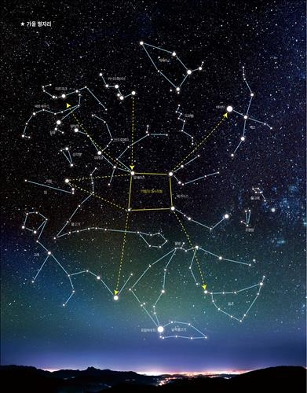
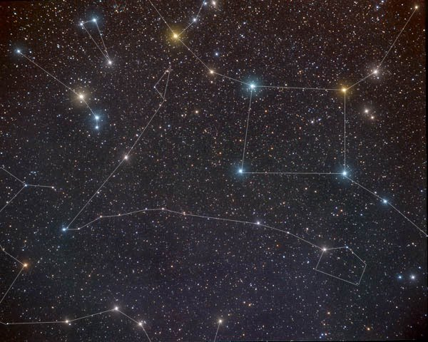

별자리 소개합니다
천구상의 항성을 여러 개씩 묶어, 동물이나 물건 또는 신화에 나오는 인물의 이름을 붙인 것. 백조자리·컴퍼스자리·헤르쿨레스자리 따위. 현재 국제적으로 88개의 별자리가 정해져 있음. 성좌(星座). [준]자리

밤하늘의 시계 초바늘

밤하늘의 시계 초바늘
이쁜별을볼수있는기회
별자리 또는 성좌(星座)는 일반적으로 밤하늘의 별들에 사람들이 붙여준 모양과 이름을 뜻한다. 순우리말로는 별자리, 영어로는 Zodiac Sign ...